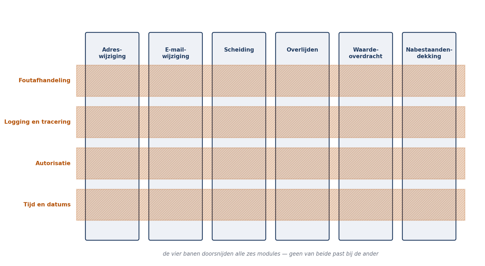

Deel 8 — Cross-cutting concepten
Deelnemersreader
Cursus Softwarearchitectuur · Niveau 1 (CPSA-F) · Deel 8 van 10
Positionering
Voorbereiding op iSAQB® CPSA-F. Geen vervanging van het officiële curriculum en examenmateriaal van het iSAQB. Technologieneutraal; arc42 + C4 als referentienotatie, Structurizr als referentietool. Zelfstandig leesbaar; kruisverwijzingen naar de Ductus-cursus Business & Enterprise Architectuur zijn aangeduid met ↗ EA.
Leerdoelen van dit deel
Na dit deel kunt u:
- uitleggen wat een cross-cutting concept is en waarom het niet met een hoofdindeling op te lossen valt;
- de belangrijkste concepten voor een bedrijfssysteem benoemen en per stuk vastleggen;
- een foutafhandelingsconcept ontwerpen met onderscheid naar foutsoort;
- een logging- en traceringsconcept ontwerpen dat een storing over componentgrenzen volgbaar maakt;
- een autorisatieconcept ontwerpen inclusief functiescheiding;
- het tijd- en datumconcept vastleggen dat in administratieve systemen de meeste stille fouten voorkomt;
- bevinding B7 uit de post-mortem Mutatie 1.0 sluiten.
Dekking CPSA-F: dit deel dekt de leerdoelen over cross-cutting concepten en technische concepten die het hele systeem raken; het vult arc42 hoofdstuk 8.
8.1 De bevinding en de openstaande wijziging
B7 luidde: foutafhandeling, logging, autorisatie en het omgaan met tijdzones en peildatums zijn in de elf services op verschillende manieren geïmplementeerd. Gevolg: een storing is niet over servicegrenzen heen te volgen, en een autorisatiewijziging vergt elf aanpassingen.
Er staat nog iets open. In deel 3 rekende u drie wijzigingen door tegen twee indelingen. De derde — alle correspondentie moet voortaan ook in het Engels beschikbaar zijn — liep langs geen van beide assen. Bij een lagenindeling raakte hij alle lagen, bij een domeinindeling alle mutatiesoorten. Dat was geen fout in uw indeling.
Dat is de definitie van een cross-cutting concept: iets dat overal geldt en dus door geen enkele hoofdindeling wordt gevangen. Elke indeling maakt sommige wijzigingen goedkoop en andere duur; de dure zijn niet toevallig maar structureel, en zij moeten apart geregeld worden.

Waarom dit zo vaak misgaat. Een cross-cutting concept heeft geen natuurlijke eigenaar. Elk team komt hem tegen, elk team lost hem lokaal op, en elke lokale oplossing is op zichzelf redelijk. Pas als geheel is het onwerkbaar. Dit is precies de conceptual-integrity-eigenschap uit deel 3: niet lokaal te verdedigen, dus alleen door iemand die over de componenten heen kijkt.
8.2 Welke concepten legt u vast?
Voor een bedrijfssysteem als Mutatie 2.0:
| Concept | Kernvraag | Prioriteit |
|---|---|---|
| Foutafhandeling | Hoe reageren we op fouten, en wie ziet wat? | Hoog |
| Logging en tracering | Hoe volgen we wat er gebeurd is? | Hoog |
| Autorisatie | Wie mag wat, en hoe weten we dat? | Hoog |
| Tijd en datums | Welke datum bedoelen we, en in welke zone? | Hoog |
| Transacties en consistentie | Wat gebeurt er samen, wat niet? | Hoog |
| Validatie | Waar valideren we wat, en hoe melden we het? | Midden |
| Configuratie | Wat is instelbaar, waar staat het, wie wijzigt het? | Midden |
| Meertaligheid | Waar leeft tekst, en hoe wordt hij gekozen? | Midden |
| Testen | Wat wordt waar getest, met welke gegevens? | Midden |
| Persistentie | Hoe slaan we op, en wie mag bij wat? | Midden |
Niet alles hoeft even zwaar. Wat u vastlegt, hangt af van wat werkelijk overal geldt en wat werkelijk verschil maakt. De toets: als twee teams dit ieder voor zich oplossen, hebben we dan een probleem? Is het antwoord nee, dan is het geen cross-cutting concept maar een implementatiekeuze.
Vorm. Een concept legt u vast in arc42 hoofdstuk 8, per stuk in ongeveer één pagina: de regel, de reden, een voorbeeld, en wat er gebeurt bij afwijking. Meer dan een pagina wordt niet gelezen; minder dan een regel is niet handhaafbaar.
8.3 Foutafhandeling
Het meest verwaarloosde concept en het meest zichtbare bij een storing.
Begin met een indeling naar foutsoort, want de reactie verschilt fundamenteel:
| Soort | Voorbeeld | Reactie |
|---|---|---|
| Invoerfout | Ongeldige postcode | Melden aan de indiener in begrijpelijke taal; niet loggen als fout |
| Bedrijfsregelfout | Scheidingsdatum ligt na de peildatum | Melden met de regel erbij; vastleggen als gebeurtenis, want zij hoort in de mutatiegeschiedenis |
| Tijdelijke technische fout | Kernadministratie onbereikbaar | Niet melden aan de indiener; herpogen, vasthouden, en zichtbaar maken voor beheer |
| Blijvende technische fout | Ongeldige configuratie, programmeerfout | Snel falen, luid loggen, en niet doorgaan alsof er niets is |
De fout die in Mutatie 1.0 werd gemaakt is dat deze vier soorten niet werden onderscheiden. Een onbereikbare kernadministratie leverde de deelnemer een foutmelding op; een ongeldige postcode belandde in het foutlogboek tussen de echte storingen. Het gevolg is dubbel: gebruikers krijgen meldingen waar zij niets mee kunnen, en beheer kan door de ruis de echte fouten niet vinden.
Vier regels om vast te leggen:
- Wie ziet wat. De deelnemer ziet begrijpelijke taal zonder technische details; de behandelaar ziet de bedrijfsregel; beheer ziet de technische oorzaak. Drie verschillende teksten voor dezelfde gebeurtenis is normaal, geen verspilling.
- Wat is herstelbaar en wat niet. Een tijdelijke fout wordt herpoogd, een blijvende niet. Herpogen op een blijvende fout is de meest voorkomende oorzaak van een storing die zichzelf versterkt.
- Wat gebeurt er met het werk. Gaat de mutatie verloren, wordt zij vastgehouden, of gaat zij naar een uitvalbak? Dit is de vraag uit deel 4 (foutstrategie in de pipeline), nu voor het hele systeem.
- Wie wordt gewaarschuwd, en wanneer. Niet elke fout is een melding waard. Wat wel: blijvende technische fouten, en het overschrijden van een drempel op tijdelijke fouten.
Wat u niet doet: een generieke foutklasse waarin alles terechtkomt, of het onderdrukken van fouten om het scherm rustig te houden. Beide zijn in Mutatie 1.0 aangetroffen.
8.4 Logging en tracering
Het concept dat B7 rechtstreeks adresseert: een storing is niet over servicegrenzen heen te volgen.
Correlatie-identificatie. Elke inkomende opdracht krijgt bij binnenkomst een identificatie die wordt meegegeven aan alles wat eruit voortkomt — synchrone aanroepen, gebeurtenissen, batchregels, en de doorgifte naar de kernadministratie. Zonder deze ene afspraak is een storing niet te volgen, en met haar is een storing bijna altijd te volgen.
In een modulith met één logbestand lijkt dit minder urgent. Dat is bedrog: zodra er asynchrone verwerking is — en die is er, want de doorgifte is asynchroon — valt de samenhang uit elkaar. Een mutatie die om 10:03 wordt bevestigd en om 10:47 wordt doorgegeven, is zonder correlatie niet als één gebeurtenis te herkennen.
Wat u logt. Op elke betekenisvolle stap: wat, wanneer, voor wie, met welk resultaat, en de correlatie-identificatie. Wat u níét logt: persoonsgegevens die er niet toe doen, wachtwoorden, en volledige berichten waarin toevallig persoonsgegevens zitten. Dat laatste is een veelvoorkomende AVG-fout die pas bij een audit boven water komt.
Logniveaus met betekenis. Leg vast wat elk niveau betekent en wanneer u het gebruikt. Zonder afspraak logt de een op waarschuwingsniveau wat de ander op foutniveau logt, en is het niveau als filter waardeloos.
Onderscheid drie soorten vastlegging — dit wordt vaak verward en heeft verschillende bewaartermijnen en verschillende lezers:
- Technische logging — voor beheer, dagen tot weken bewaard, mag ruis bevatten.
- Gebeurtenissen — de mutatiegeschiedenis, de bron uit deel 5, zeven jaar bewaard, onveranderlijk.
- Audittrail voor toezicht — een gerichte selectie van gebeurtenissen met een eigen bewaar- en toegangsregime.
Wie deze drie in één voorziening propt, krijgt of te veel bewaard (kosten en AVG-risico) of te weinig (QS-4 niet haalbaar).
8.5 Autorisatie
De vraag is niet “wie mag inloggen” maar “wie mag welke handeling verrichten op welk gegeven”.
Voor Mutatie 2.0 zijn er vier soorten actoren met verschillende regimes: de deelnemer (mag alleen zijn eigen gegevens, alleen bepaalde mutaties), de mutatiebehandelaar (mag veel deelnemers, met beperkingen per mutatiesoort), het werkgeverssysteem (mag alleen de eigen deelnemers, alleen via batch), en beheer (mag technische handelingen, uitdrukkelijk geen inhoudelijke).
Centraal beslissen, lokaal afdwingen. Het autorisatiemodel — welke rol mag welke handeling — hoort op één plaats. De handhaving hoort bij de handeling zelf, want dat is de enige plek waar zeker is dat er niets omheen gaat. In Mutatie 1.0 was het omgekeerd: elke service had zijn eigen model, en een wijziging kostte elf aanpassingen.
Functiescheiding hoort in het domein. Uit deel 2 en 6: de zorg van de security officer was dat een medewerker een adres wijzigt en vervolgens zelf de uitkeringsopdracht goedkeurt. Dat is geen rollenkwestie maar een regel over opeenvolgende handelingen op hetzelfde dossier. Zulke regels kunnen niet in een generieke autorisatielaag leven, want die kent de geschiedenis van het dossier niet.
Leg vast wat er gebeurt bij weigering. Ziet de gebruiker dat iets bestaat maar verboden is, of ziet hij het helemaal niet? Voor persoonsgegevens is dat verschil wezenlijk: “u mag het dossier van deze deelnemer niet inzien” bevestigt dat de deelnemer bestaat.
8.6 Tijd en datums
Voor een pensioensysteem is dit het concept met de hoogste opbrengst, en het staat in de meeste architecturen niet.
Drie soorten datums die op elkaar lijken en niet hetzelfde zijn:
- Ingangsdatum — vanaf wanneer geldt de verandering in de werkelijkheid? Een verhuizing per 1 juni.
- Verwerkingsdatum — wanneer hebben wij het vastgelegd? De melding kwam op 14 juni.
- Peildatum — naar welk moment kijken wij bij een berekening? Bijvoorbeeld de stand per 31 december.
Een adreswijziging met ingangsdatum 1 juni, verwerkt op 14 juni, met een uitkeringsberekening op peildatum 1 juni, is een normale situatie — en zij is alleen correct af te handelen als deze drie apart worden bijgehouden. In deel 3 zagen we dat mutatieverwerking en statusoverzicht verschillende dingen bedoelden met een leeg datumveld; dat is de goedkope versie van dit probleem.
Terugwerkende kracht. Administratieve systemen krijgen mutaties met terugwerkende kracht — een scheiding die twee jaar geleden is uitgesproken, een overlijden dat laat gemeld wordt. Dat betekent dat een berekening die vorig jaar klopte, vandaag anders uitvalt. Het concept moet vastleggen: kunnen we de toestand op een willekeurig moment reconstrueren (dat kan alleen met de gebeurtenissenaanpak uit deel 5), en hoe gaan we om met reeds verzonden berichten die achteraf onjuist blijken?
Vier regels om vast te leggen:
- Eén tijdzone in de opslag (UTC), omzetting naar lokale tijd uitsluitend bij weergave. Nederland kent twee zomertijdovergangen per jaar; een batch die om 02:30 draait, draait één nacht per jaar twee keer en één nacht helemaal niet.
- Datum zonder tijd waar het om een kalenderdag gaat. Een ingangsdatum is een dag, geen tijdstip. Er als tijdstip mee rekenen levert fouten op bij middernachtgrenzen.
- Systeemtijd niet rechtstreeks lezen. Dit was de “tijdpoort” uit deel 4: het domein vraagt de peildatum op via een poort, zodat peildatumlogica testbaar is zonder de klok te manipuleren.
- Vastleggen welke datum leidend is per soort berekening, en dat in de begrippenlijst (arc42 hoofdstuk 12) opnemen.
↗ EA — Op landschapsniveau is dit hetzelfde probleem als de gegevensdefinitie-afstemming die de EA-cursus behandelt: verschillende systemen die hetzelfde begrip net anders invullen. De schade is hier alleen directer zichtbaar, omdat het om berekende rechten gaat.
8.7 De overige concepten, kort
Transacties en consistentie. Leg vast wat samen gebeurt en wat niet. In een modulith kan het meeste in één transactie; het uitzonderlijke — de asynchrone doorgifte — moet expliciet zijn, inclusief het venster en de manier waarop dat zichtbaar wordt.
Validatie. Drie plaatsen: aan de rand (formaat en volledigheid), in het domein (bedrijfsregels), en bij opslag (integriteit). Leg vast wat waar hoort, anders staan dezelfde regels op drie plekken en lopen ze uiteen. In deel 3 was dat de kern van de adresvalidatiefout.
Meertaligheid. Dit was de wijziging waarop u in deel 3 vastliep. De regel: tekst leeft niet in de logica. Alle voor gebruikers zichtbare tekst komt uit één voorziening, met een sleutel per tekst en een taalkeuze per ontvanger. Wie dat vanaf het begin doet, kost het niets; wie het achteraf invoert, raakt elke module.
Configuratie. Leg vast wat instelbaar is en wie het mag wijzigen. De reglementsparameters per werkgever uit deel 4 zijn hier het lastige geval: zij zijn geen technische configuratie maar bedrijfsgegevens, en zij horen dus in beheer bij de administratie, met versiehistorie — want een parameterwijziging verandert berekende rechten.
Testen. Leg vast wat waar getest wordt en met welke gegevens. Voor deze doelgroep relevant: testgegevens met echte persoonsgegevens zijn geen optie, en gefingeerde gegevens moeten toch realistisch genoeg zijn om peildatumgedrag te toetsen.
8.8 Hoe u concepten laat leven
Een vastgelegd concept dat niemand toepast, is een document. Vier maatregelen, van sterk naar zwak — dezelfde ordening als bij de modulegrenzen in deel 5:
- Onvermijdelijk maken. Als correlatie-identificatie automatisch wordt meegegeven door de infrastructuur die iedereen gebruikt, kan niemand hem vergeten. Dit is verreweg de sterkste maatregel: het concept is geen regel maar de weg van de minste weerstand.
- Controleerbaar maken. Een bouwstraatcontrole die faalt bij het rechtstreeks lezen van de systeemklok, of bij een logregel zonder correlatie.
- Voorbeeldig maken. Eén module die het goed doet en waarnaar iedereen kijkt. Werkt goed bij nieuwe teamleden, minder bij tijdsdruk.
- Afspreken. Het concept staat in hoofdstuk 8 en iedereen heeft het gelezen. De zwakste vorm, en de enige die beschikbaar is voor concepten die zich niet laten automatiseren — bijvoorbeeld welke datum leidend is.
De praktische consequentie: kies bij het ontwerpen van een concept bewust hoe u het handhaaft, en geef de voorkeur aan concepten die zichzelf afdwingen. Een concept dat alleen in een document staat, is over twee jaar elf keer verschillend geïmplementeerd — dat is precies wat er gebeurd is.
8.9 B7 gesloten
Bevinding B7 sluit met drie dingen samen:
- De concepten zijn vastgelegd in arc42 hoofdstuk 8, per stuk ongeveer één pagina, met regel, reden, voorbeeld en gedrag bij afwijking.
- De belangrijkste concepten zijn onvermijdelijk of controleerbaar gemaakt — niet alleen afgesproken.
- Er is een eigenaar. Een cross-cutting concept heeft geen natuurlijke eigenaar en krijgt er dus een toegewezen: de architect, of het gremium dat in deel 9 aan de orde komt.
Wat B7 niet is. Het is geen technisch probleem. Elk van de elf teams in Mutatie 1.0 had een redelijke oplossing voor foutafhandeling. De schade ontstond doordat er elf redelijke oplossingen waren en niemand de bevoegdheid had om er één van te maken. Dat is een organisatorisch probleem met een technische verschijningsvorm — en het is de reden dat deel 9 over governance en evaluatie gaat.
Samenvatting
- Een cross-cutting concept geldt overal en wordt daarom door geen enkele hoofdindeling gevangen. Elke indeling maakt sommige wijzigingen duur; die zijn niet toevallig maar structureel.
- Cross-cutting concepten hebben geen natuurlijke eigenaar. Elk team lost ze lokaal en redelijk op; het geheel is dan onwerkbaar.
- Toets of iets een concept is: als twee teams dit ieder voor zich oplossen, hebben we dan een probleem?
- Foutafhandeling begint met een indeling naar foutsoort — invoerfout, bedrijfsregelfout, tijdelijke en blijvende technische fout — want de reactie verschilt fundamenteel. Drie verschillende teksten voor dezelfde gebeurtenis is normaal.
- Correlatie-identificatie is de ene afspraak die een storing volgbaar maakt. Onderscheid technische logging, gebeurtenissen en audittrail: verschillende lezers, verschillende bewaartermijnen.
- Autorisatie: centraal beslissen, lokaal afdwingen. Functiescheiding hoort in het domein, want die kent de geschiedenis van het dossier.
- Tijd en datums leveren in administratieve systemen de meeste stille fouten. Onderscheid ingangs-, verwerkings- en peildatum; sla op in UTC; lees de klok niet rechtstreeks.
- Concepten laat u leven door ze onvermijdelijk of controleerbaar te maken. Een concept dat alleen in een document staat, is over twee jaar elf keer verschillend geïmplementeerd.
- B7 is geen technisch probleem: er waren elf redelijke oplossingen en niemand met de bevoegdheid er één van te maken.
Kernbegrippen
Cross-cutting concept — een oplossing die overal in het systeem geldt en niet door de hoofdindeling wordt gevangen.
Correlatie-identificatie — een identificatie die bij binnenkomst wordt toegekend en wordt meegegeven aan alles wat uit een opdracht voortkomt.
Ingangsdatum / verwerkingsdatum / peildatum — respectievelijk: vanaf wanneer iets geldt, wanneer wij het vastlegden, en naar welk moment een berekening kijkt.
Terugwerkende kracht — een mutatie met een ingangsdatum in het verleden, waardoor eerdere berekeningen anders uitvallen.
Functiescheiding — de regel dat bepaalde opeenvolgende handelingen op hetzelfde dossier niet door dezelfde persoon mogen worden verricht.
Onvermijdelijk maken — een concept zo inrichten dat het toepassen ervan de weg van de minste weerstand is.
Verder lezen
- iSAQB, Curriculum CPSA-Foundation Level — hoofdstuk 4, technische en cross-cutting concepten.
- arc42.org — hoofdstuk 8, met een uitgebreide lijst mogelijke concepten en voorbeelden.
- Fowler, Patterns of Enterprise Application Architecture — de patronen rond temporele gegevens en audittrails; gedateerd in techniek, actueel in probleemstelling.
- Snodgrass, Developing Time-Oriented Database Applications — voor wie het datumprobleem grondig wil begrijpen.
Ductus B.V. · Cursus Softwarearchitectuur · Niveau 1, deel 8 · Deelnemersreader